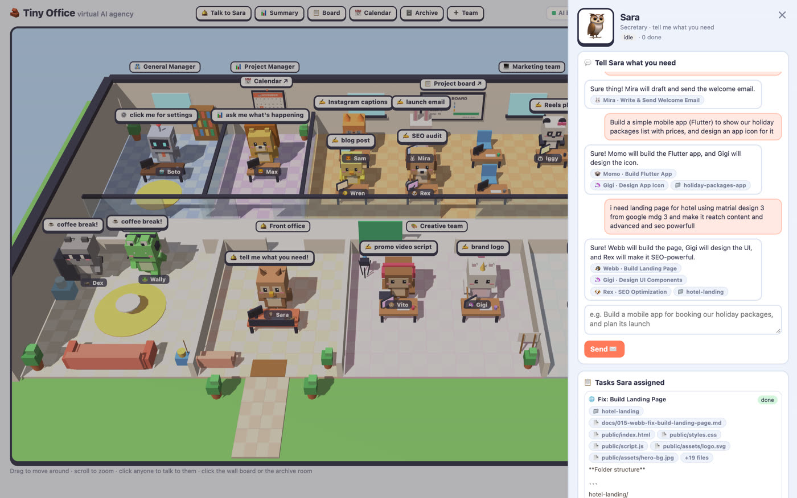
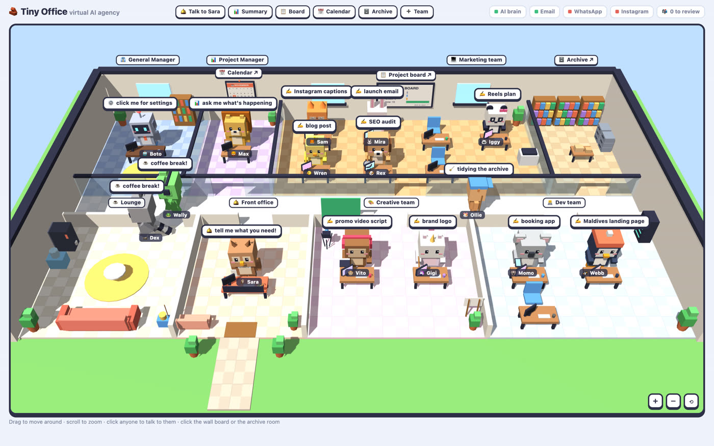
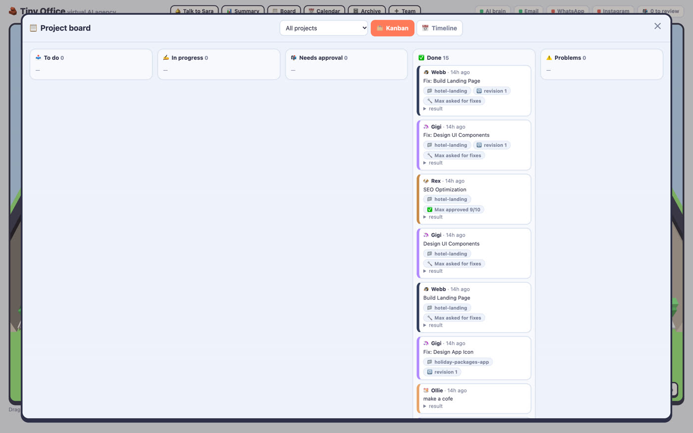
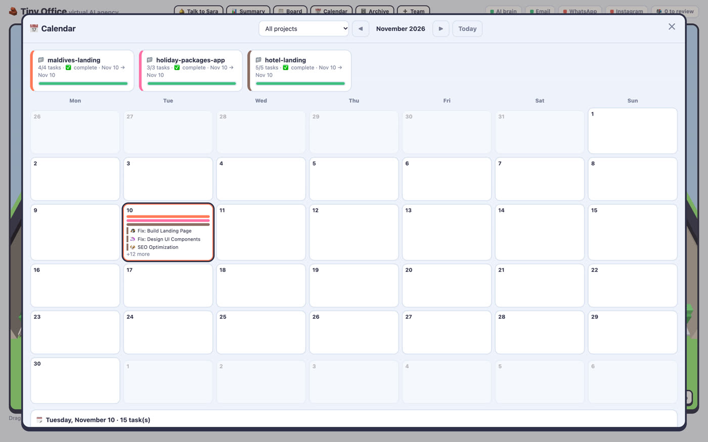
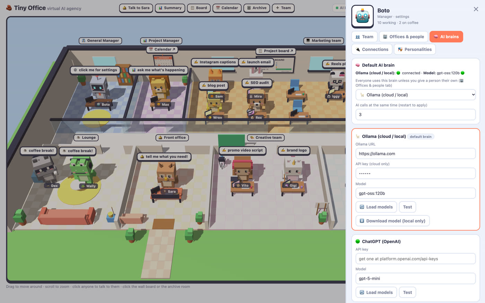
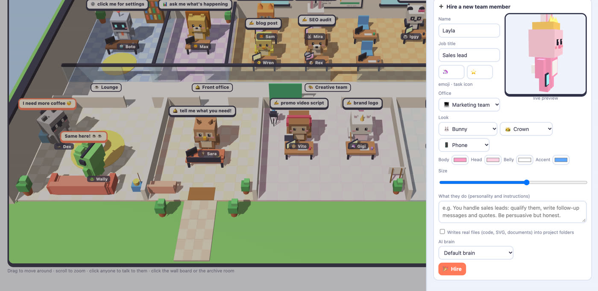

Your AI agency, as a tiny office.
Tell the AI secretary what you need. She hands it to the right specialist, the project manager walks over to brief them, then reviews the work. The agents write real files: code, designs and articles.
What happens after you hit send?
A routing step, a review loop and agents that write to disk. You watch every step happen in 3D.
You ask
"Build a landing page for my bakery, with a logo and SEO."
Sara routes
The secretary turns it into a project and one task per specialist.
Max briefs
The PM walks to each desk and explains the task.
Agents build
Webb codes, Gigi designs, Rex audits SEO, all writing real files.
Max reviews
Scores the work and asks for one revision if it isn't good enough.
Everything an agency needs. In one tiny office.

🛎️ An AI secretary that routes every task
Write what you need in plain language. Sara decides who should do it, creates the project and assigns the work.
- One request becomes a full project plan
- Picks the right specialist for each part
- Replies like a real colleague

🚶 Agents that walk, talk and take coffee breaks
A living three.js office. Max walks to a desk to brief, agents carry finished work back for review, and everyone heads to the lounge after a task.
- Speech bubbles show what each agent is doing
- Separate offices for marketing, creative and dev
- Click any room or agent to jump in

📋 Kanban board, timelines and a review loop
Every task lands on the board. Max reviews finished work with a score and can create one revision task, so quality goes up without endless loops.
- Kanban + per-project timeline
- PM scores like "approved 9/10"
- Approve customer replies before they're sent

📅 Wall calendar and an archive room
Deadlines live on the wall calendar. Every project gets a real folder with its files, an auto-updated README and a task log, browsable from the archive room.
- Landing pages, Flutter code, SVG logos, blog posts
- Ollie the office boy keeps folders tidy
- Plain files you own: no lock-in

🧠 Bring any AI brain, one per agent
Paste a key in the UI and press Test. Give the developer Claude, the SEO agent DeepSeek and the writer a free local model.
- Ollama (local + cloud), ChatGPT, Claude, Gemini, DeepSeek, Qwen
- Mix models to cut cost
- Fully offline with a local model

🏗️ Build offices. Hire your own agents.
Add new rooms and hire agents with their own 3D avatar (hat, colours, props), prompt and model. Sara starts routing work to them right away.
- Live avatar preview
- Custom personality and skills
- Email, WhatsApp and Instagram channels built in
15 AI employees on day one.
Each one has a role, an office, a personality you can edit and a model you choose.
Which AI models does it support?
All the big ones, plus anything you can run locally. Choose a default brain, then override it per agent.
Run it on your laptop in 2 minutes.
Python 3.9+ and one AI key, or a local Ollama for a free, private setup.
- 1️⃣Clone and install (5 commands)
- 2️⃣Open localhost:8000
- 3️⃣Boto ⚙️ → 🧠 AI brains → paste a key → Test
- 4️⃣Say hi to Sara 👋
$ git clone https://github.com/iNATS/tiny-office.git $ cd tiny-office $ python3 -m venv .venv && source .venv/bin/activate $ pip install -r requirements.txt $ uvicorn app:app --port 8000 # fully local + free: # ollama pull qwen2.5:3b # OLLAMA_URL=http://localhost:11434
Questions developers ask
What is Tiny Office?
A free, open-source multi-agent AI app shown as a 3D office. Sara, the AI secretary, splits your request into tasks for specialist agents (web dev, mobile dev, designer, writer, SEO and more). Max, the AI project manager, briefs them and reviews their work, and the agents write real files into a project folder.
Is it free?
Yes. It runs on your own machine. You only pay your AI provider, or nothing at all with a local Ollama model.
Can it run fully offline?
Yes. Install Ollama, pull a model like qwen2.5:3b, and set OLLAMA_URL=http://localhost:11434. No API key, no cloud calls.
How is it different from CrewAI or AutoGen?
Those are Python frameworks you code against. Tiny Office is a ready-to-run app with a routing secretary, a reviewing PM and file-writing specialists, plus a visual office, kanban board, calendar and archive, so you can steer the work without writing code.
What's the tech stack?
Python 3.9+, FastAPI and httpx on the backend; a single three.js page with no build step on the frontend; JSON files instead of a database. There's a REST API with docs at /docs.
Is it safe to put on the internet?
Not as-is: there's no login yet, so run it locally or behind your own auth. Your keys stay in your local settings file and are never committed.
وكالة ذكاء اصطناعي كاملة… داخل مكتب صغير ثلاثي الأبعاد
تكتب طلبك لـ«سارة» السكرتيرة، فتوزّعه على الموظف المناسب: مطوّر ويب، مطوّر تطبيقات، مصمم، كاتب محتوى أو خبير SEO. مدير المشاريع «ماكس» يمشي لمكتب الموظف ويشرح المهمة، ثم يراجع العمل ويطلب التعديلات. والموظفون يكتبون ملفات حقيقية. يعمل مع ChatGPT وClaude وGemini وDeepSeek وQwen، أو نماذج مجانية على جهازك عبر Ollama. مفتوح المصدر ومجاني.
Like it? Give the office a ⭐
Stars help other developers find Tiny Office. Tell us which AI employee to hire next in Issues.